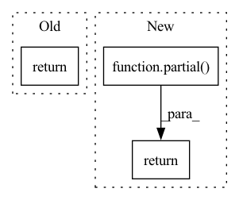

Pattern ID :3597
Before Change
return atom_vocab
if vocab_func == "atom_features":
return atom_features_vocab
raise ValueError("Vocab function "{}" not supported.".format(vocab_func))
After Change
return partial(atom_vocab, vocab_func="atom")
if vocab_func == "atom_features":
return partial( atom_vocab, vocab_func="atom_features")
raise ValueError("Vocab function "{}" not supported.".format(vocab_func))
In pattern: SUPERPATTERN
Frequency: 3
Non-data size: 3
Instances Fragment ID: 13651760
Project Name: aamini/chemprop
Commit Name: aab44e510498fd3906a30e7e658857d9d35ea1df
Time: 2018-12-18
Author: yangk@mit.edu
File Name: chemprop/data/vocab.py
M Class Name: AnonimousClass
N Class Name: AnonimousClass
M Method Name: get_vocab_func(1)
N Method Name: get_vocab_func(1)
M Parent Class:
N Parent Class:
M File Name: chemprop/data/vocab.py
N File Name: chemprop/data/vocab.py
M Start Line: 52
M End Line: 55
N Start Line: 62
N End Line: 65
Before Change
Returns: values of psi
"""
beta = self.parameters["beta"]
return np.exp(-beta*pos**2)
def nuclear_potential(self,pos):
return 0.5*pos**2 After Change
return np.exp(-beta*pos**2)
def get(self,pos):
return partial( self.value,self.parameters) (pos)
def fp(self,parameters):
return partial(self.value,pos=self.pos)(parameters) Fragment ID: 13651761
Project Name: nlesc-jcer/qmctorch
Commit Name: 7566fc6f91ff3fb0a16e234936e6739f55006bd8
Time: 2019-04-16
Author: nicolas.gm.renaud@gmail.com
File Name: example/ho1d.py
M Class Name: HarmOsc1D
N Class Name: HarmOsc1D
M Method Name: get(2)
N Method Name: get(2)
M Parent Class: WF
N Parent Class: WF
M File Name: example/ho1d.py
N File Name: example/ho1d.py
M Start Line: 21
M End Line: 22
N Start Line: 28
N End Line: 28
Before Change
return final_scores
return span_finder_score
def get_span_predictions(docs, candidates_key: str) -> Floats2d:After Change
candidates_key: str = DEFAULT_CANDIDATES_KEY,
reference_key: str = DEFAULT_REFERENCE_KEY,
):
return partial(
span_finder_score, candidates_key=candidates_key, reference_key=reference_key
)
def span_finder_score(
examples: Iterable[Example], Fragment ID: 13651759
Project Name: explosion/spacy-experimental
Commit Name: ed23f28d26e8bf69fa81dc35f5751e741295f9b2
Time: 2022-05-24
Author: adrianeboyd@gmail.com
File Name: spacy_experimental/span_finder/span_finder_component.py
M Class Name: AnonimousClass
N Class Name: AnonimousClass
M Method Name: make_span_finder_scorer(2)
N Method Name: make_span_finder_scorer(1)
M Parent Class:
N Parent Class:
M File Name: spacy_experimental/span_finder/span_finder_component.py
N File Name: spacy_experimental/span_finder/span_finder_component.py
M Start Line: 122
M End Line: 122
N Start Line: 105
N End Line: 109